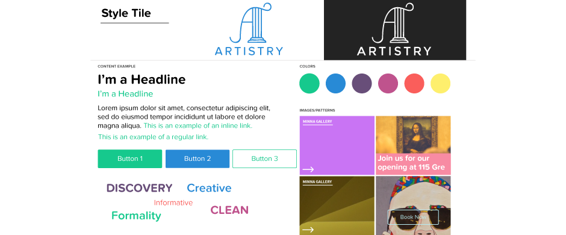
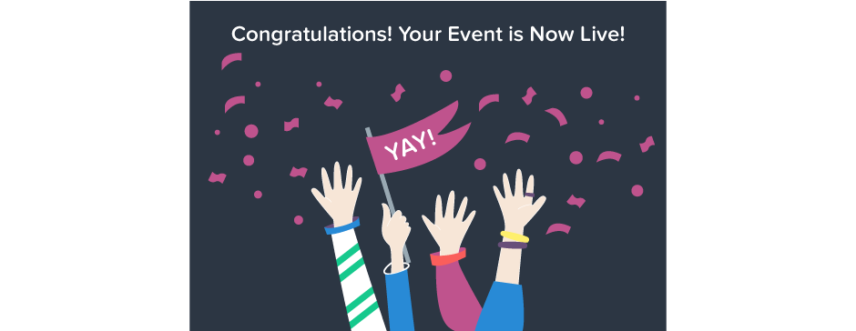
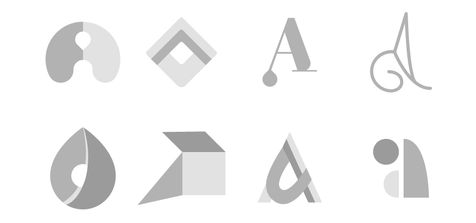
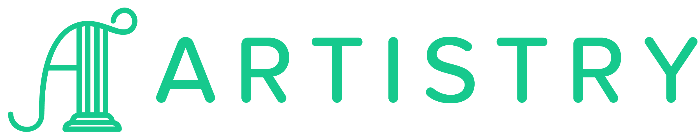
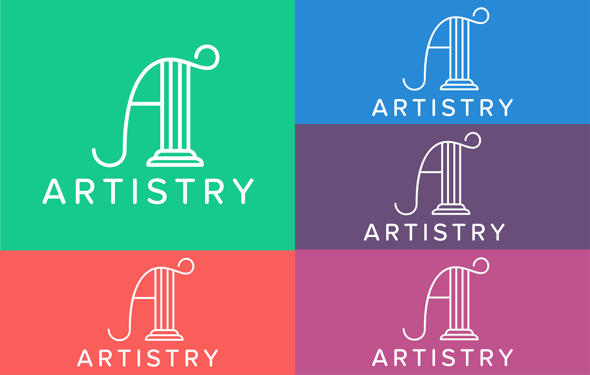
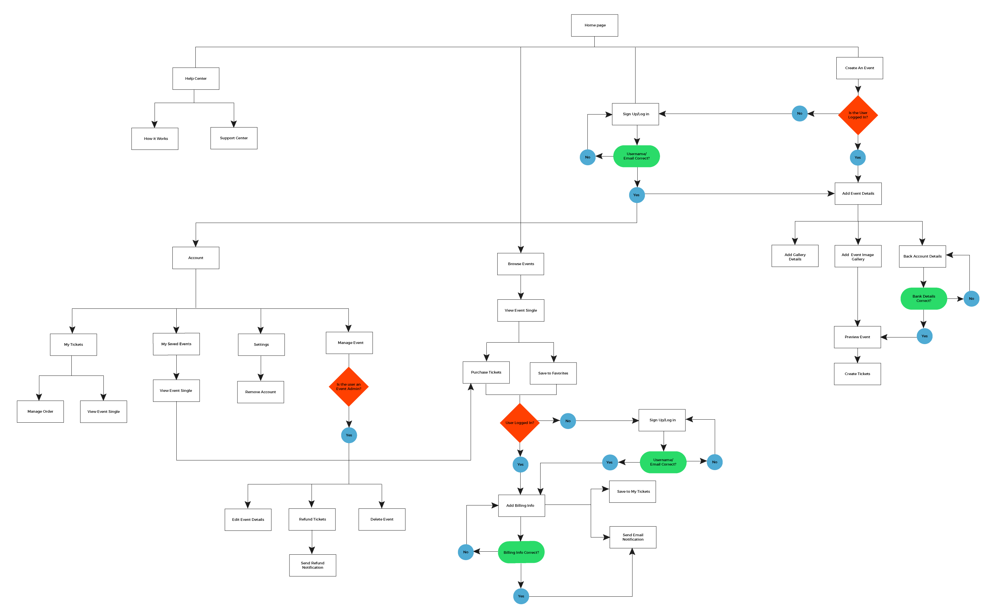
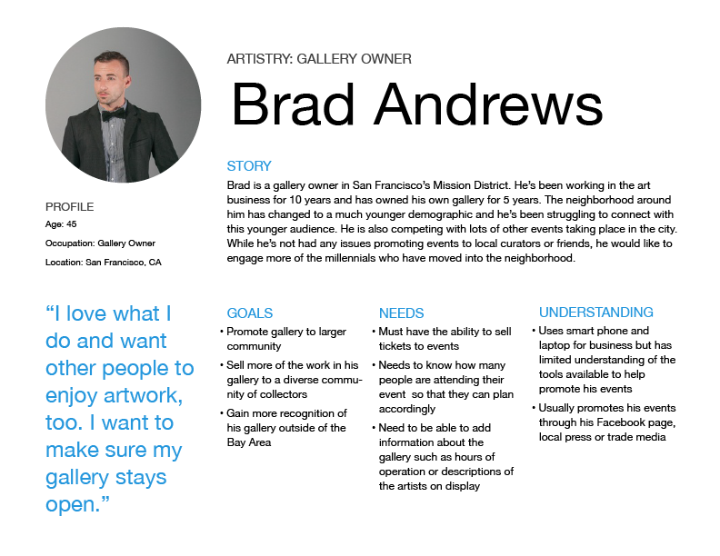
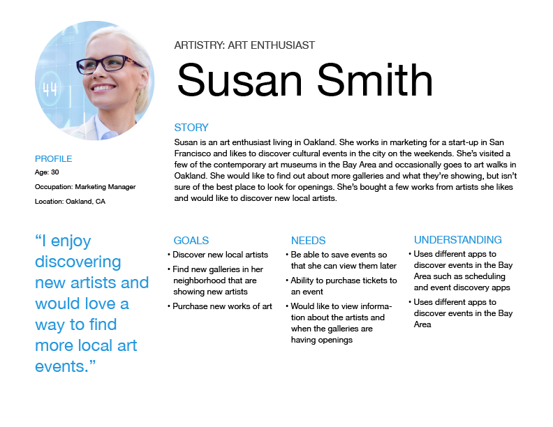
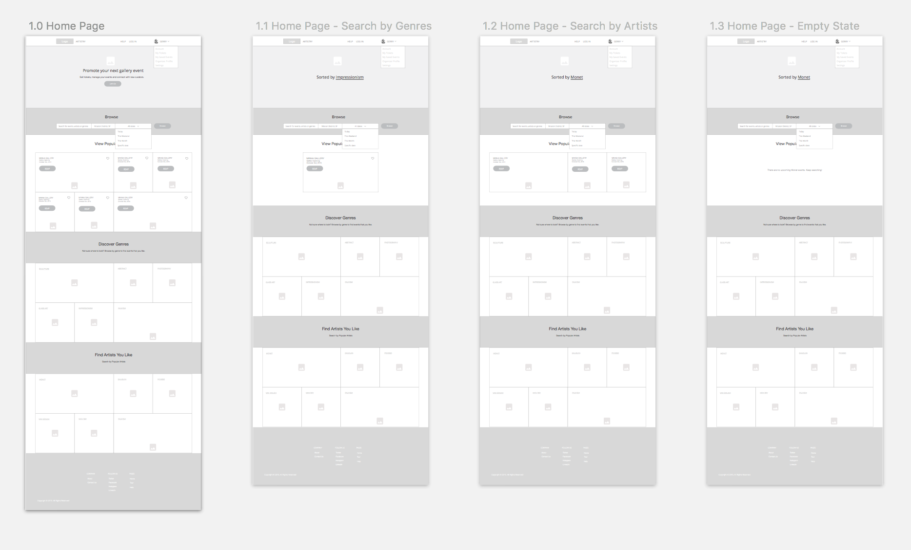
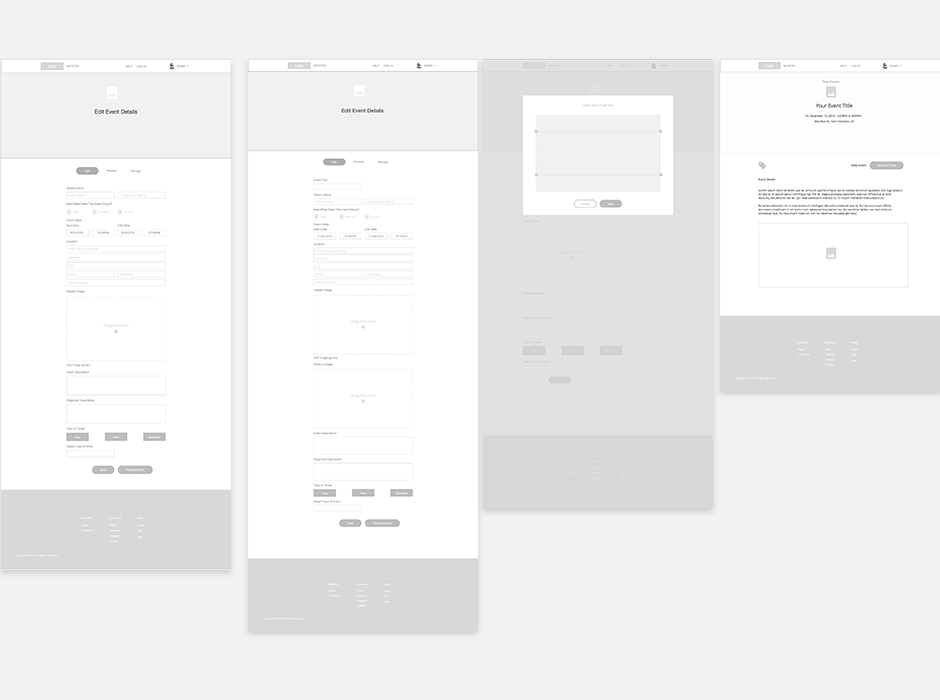

Artistry in an app that connects gallery owners with art enthusiasts. Gallery owners can create an event and manage the ticket price and promotion all in one place. Art enthusiasts can search for events by date, artist or genre. Discovering art events can take a lot of time scouring through many disjointed sources like word of mouth, museum and gallery newsletters, blogs, difficult to navigate arts websites and social media channels.
Artistry's color palette conveys the two sides of the brand: on the one hand, the bright colors demonstrate how the app is light hearted, inspirational and fun; on the other hand, the colors are slightly muted to show that Artistry is also refined. The neutral colors soften the palette and indicate that there is also a mature side to its personality. Brighter colors balance out the experience for functional aspects such as error messages or buttons.
Illustrations are included for confirmation that a user has completed a task successfully.
I decided that the mark needed to balance strength and poise, so that it could appeal to a younger audience but still have the maturity for the museum-goer crowd.
The logotype is friendly, fun and clean without being too minimal. The overall aesthetic tells the story of the gallery space and how it has a high-end, but approachable vibe.
 I began by researching other event apps, such as Eventbrite and Kickstarter, to see how they dealt with promoting events. I also sent out a survey to see how people searched for and booked gallery events. The majority of people responded that they found out about gallery events through word of mouth. Also, the majority agreed that they would attend an event to see a specific artists. Based on these results and research of companies in the same space, I created a user flow.
Based on competitor research and the survey, I determined that there were two main personas that I needed to focus on for Artistry: a gallery owner and art enthusiast.
 
As a gallery:
I want to create an event listing
I want to create an account
I want to sell tickets to my event
I want to refund tickets to my event
I want to edit my current listings
I want to delete my listing
I want to view previous listings
As an art enthusiast:
I want to create an account
I want to view current events on a calendar view
I want to view events nearby
I want to save an event to my favorites
I want to search by specific gallery, artist or genre
I want to purchase tickets to an event
I want to enter my credit card information
I want to receive a refund for an event
I want to remove my credit card information
I want to view popular events
From the user flow, I learned that there had to be two different views for the wireframes: one was for the gallery owner to create an event; the other is for an art enthusiast to search for and book events. For both of these personas, discovering events is an extremely important element of the app.
Gallery owners are taken through an onboarding process to create their event. Since setting up an event requires a lot of details which may be daunting, the process is broken down into manageable chunks. Initially, the owner enters general information about date/time, location, and event description. They are then prompted to upload gallery images, which they can crop. The final step of this initial onboarding is to preview and then approve the event page.
Images and clear descriptions of events are central to the design of the app. Large, well-lit photographs of gallery spaces of work or art communicate what the user should expect when they attend an event. Textures, backgrounds or other details are kept to a minimum to focus on photographs. The app is meant to feel like a gallery space--a way to showcase artwork without distracting the viewer.